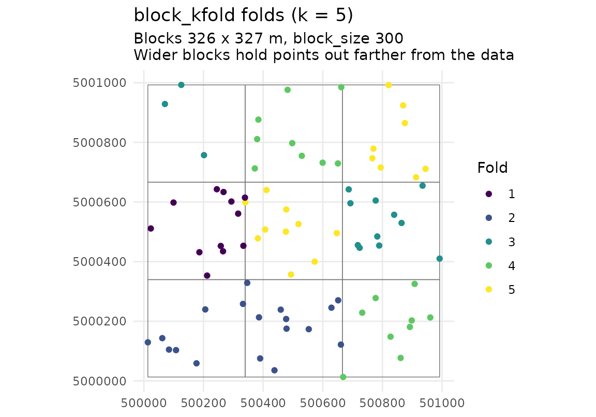

Maps the fold each observation belongs to, as a ggplot2 object. Use
it to check that the blocks separate the data, and how wide they are beside
the autocorrelation range when make_folds(auto_range = TRUE) estimated
one. For "block_kfold" folds the block outlines are drawn too, from
folds$params$blocks, so a fold can be seen to be one area or several and
an empty block can be seen to be empty.
Arguments
- folds
A list returned by
make_folds().- points_sf
The sf layer the folds were built from. It is drawn in x and y (spatialkit-geometry), and so are
boundaryand the blocks. A row without a location (a coordinate that is not finite or lies beyond 1e150, or a point thatmake_folds()left out of every fold because it is empty or the CRS the folds were built in cannot place it) is not drawn, and neither is a row ofboundarywith such a coordinate; one warning says how many.- boundary
Optional polygon layer (sf or sfc) to draw underneath.
- blocks
Logical; draw the block polygons when
foldscarries them. DefaultTRUE.
Details
The subtitle states the setting that decides how far the held-out points
sit from their training data, read from folds$params: the size of the
blocks built and the block_size asked for (with the estimated range
when there is one), the buffer, the number of location groups, the median
NNDM exclusion, or, for kNNDM folds, that they are matched to the
prediction distances. Lengths are in the units of the CRS the folds were
built in.
See also
make_folds(), which builds the folds, and fold_separation()
to measure how far the held-out points sit from their training data.
Other folds:
cv_block_size_sweep(),
fold_separation(),
make_folds()
Examples
library(sf)
set.seed(1)
n <- 80
pts <- st_as_sf(
data.frame(x = 5e5 + runif(n, 0, 1000), y = 5e6 + runif(n, 0, 1000)),
coords = c("x", "y"), crs = 32632
)
f <- make_folds(pts, k = 5, method = "block_kfold", block_size = 300)
plot_folds(f, pts)
